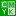

前景色/背景色 Foreground/Background Color
前景色和背景色工具
{kind=link}
此工具是用来设置颜色的主要入口，在图像中填充颜色时，通常会在这里进行颜色设置。
提示
此工具不是用来调整图像的颜色，而是用来创建一个颜色；您可以把创建的颜色填充到图像中。
概述
概述说明请参考GIMP工具箱⇒前景色和背景色。
点击大的黑色方块，会弹出前景色设置设置对话框(同理，点击大的白色方块，会弹出背景色设置对话框，内容与前景色设置对话框相同)：
前景色设置
对话框左上角有五个图标：
( ) GIMP调色板：这个是GIMP默认的调色板，您可以在这里设置颜色。(这个调色板是HSV调色板)
提示
Hue、Saturation、Value(HSV)的说明，请参考驿窗平面基础
{kind=link}
对话框中，左侧的大色块是某一确定色相{Hue}的饱和度和明度的二维图，横坐标代表饱和度{Saturation}变化，纵坐标代表明度{Value}变化。
对话框中，左侧大色块的色相由该大色块右侧的纵向的细 色相条 决定。此色相条相当于一个展开的色相环，从上到下表示沿色相环顺时针变化。红色相为色相环的原点(0°/360°)。
对话框中，左侧大色块下面的“当前”和“旧的”分别表示当前设置的颜色和之前设置的颜色，二者放在一起方便您进行对比。
对话框中，中间的上方“0..100”和“0..255”分别代表10进制和2进制，“0..100”的范围是0-100，“0..255”的范围是0-255，即下方色值的计量方法。
对话框中，右上方的“LCh”和“HSV”分别代表LCh色彩空间和HSV色彩空间。
对话框中，中间的六个横向色条及其右侧的数值，表示对应的 通道值：上面三个是RGB值，下面三个是HSV值(色相/饱和度/明度)。其中，第四个H值与左侧纵向的细 色相条 等同，区别是一个是横向，另一个是纵向。(移动其中一个，另一个会联动)
我们常用的是RGB值，HSV值通常是高级用户使用。
对话框中，中间六个横向色条的下方，是HTML标记，表示当前所选择颜色的16进制值，可以直接用于HTML/CSS。也可以在数值框中输入某个16进制值并回车来找到对应的颜色。(回车后，在“当前”处会显示对应16进制值的颜色)
框中的16进制数值支持复制/粘贴，您可以把16进制数值复制其它软件中，也可以从其它软件中复制16进制数值到框中，方法是在框中选中全部16进制数值，然后点击鼠标右键用弹出菜单操作。
16进制数值框右侧是 滴管 工具，点击后，鼠标会切换为 滴管，理论上您可以拾取屏幕上任何位置的颜色，包括多屏幕。
16进制数值框下方的色块是以前曾经用过的颜色，有12个。您可以把当前选择的颜色加入到这里，方法是设置好“当前”颜色后，点击中间的( )按钮。
重置按钮可以把所有内容恢复到此对话框刚打开时的状态。
{kind=link}
{kind=link}
在左侧大方块上点击左键一次，相当于挤了一点水彩颜料到画板上，颜料的色相即鼠标点击位置的色相。点击次数越多，挤的颜料量越多，“当前”处显示的颜色变化越多。
一次点击所挤出的颜料量，由大方块右侧的纵向滑块决定。滑块越高，一次点击所挤出的颜料量越多；滑块越低，一次点击所挤出的颜料量越少；
在左侧大方块上点击右键一次，相当于从画板上减少一点水彩颜料，颜料的色相即鼠标点击位置的色相。点击次数越多，减少的颜料量越多，“当前”处显示的颜色变化越多。
一次点击所减少的颜料量，由大方块右侧的纵向滑块决定。滑块越高，一次点击所减少的颜料量越多；滑块越低，一次点击所减少的颜料量越少；
(  ) CMYK调色板：此调色板使用CMYK值来设置颜色。因为GIMP暂时还不支持CMYK模式，所以这里的值只能用于参考，实际填充颜色时，无法填充CMYK色值。
{kind=link}
配置：ICC文件。
{kind=link}
{kind=link}